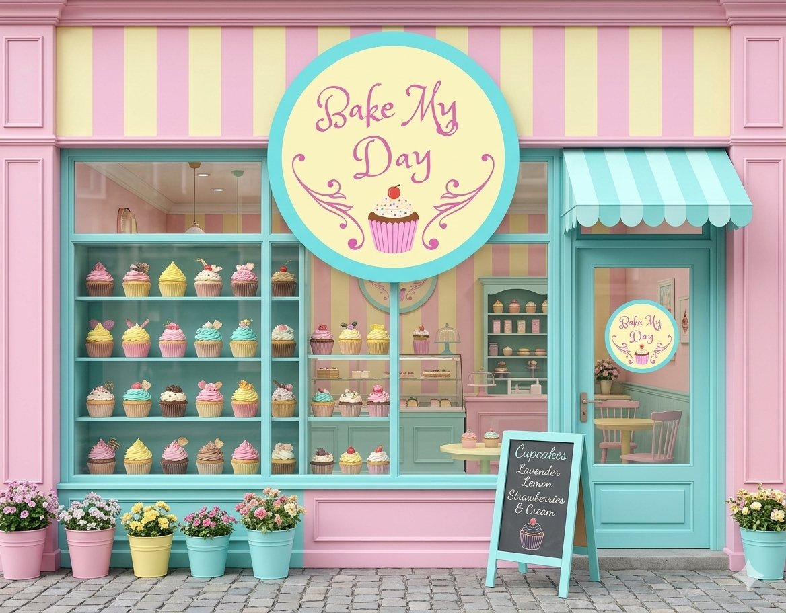

Como tudo começou...

A Bake My Day nasceu na cozinha de casa, alimentada pela paixão de espalhar felicidade em formatos de bolinhos perfeitamente recheados. O que começou como um hobby de fim de semana tomou proporções maiores quando percebemos que nossos cupcakes transformavam dias comuns em momentos de festa.